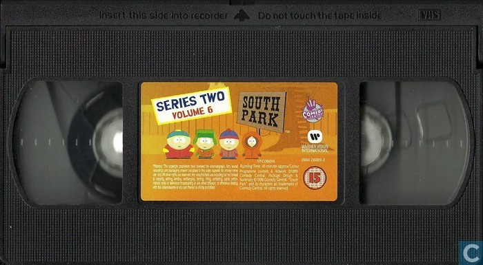

List of Episodes
Season 1
Number of episodes: 13 Air date: August 13, 1997 - February 25, 1998 Click here to see episodes list| Episode number | Title | Air Date |
|---|---|---|
| 1 | Cartman Gets an Anal Probe | 13-Aug-97 |
| 2 | Volcano | 20-Aug-97 |
| 3 | Weight Gain 4000 | 27-Aug-97 |
| 4 | Big Gay Al's Big Gay Boat Ride | 3-Sep-97 |
| 5 | An Elephant Makes Love to a Pig | 10-Sep-97 |
| 6 | Death | 17-Sep-97 |
| 7 | Pinkeye | 29-Oct-97 |
| 8 | Starvin' Marvin | 19-Nov-97 |
| 9 | Mr. Hankey, the Christmas Poo | 17-Dec-97 |
| 10 | Damien | 4-Feb-98 |
| 11 | Tom's Rhinoplasty | 11-Feb-98 |
| 12 | Mecha-Streisand | 18-Feb-98 |
| 13 | Cartman's Mom Is a Dirty Slut | 25-Feb-98 |
Season 2
Number of episodes: 18 Air date: April 1, 1998 - January 20, 1999 Click here to see episodes list| Episode number | Title | Air Date |
|---|---|---|
| 1 | Cartman Gets an Anal Probe | 13-Aug-97 |
| 2 | Volcano | 20-Aug-97 |
| 3 | Weight Gain 4000 | 27-Aug-97 |
| 4 | Big Gay Al's Big Gay Boat Ride | 3-Sep-97 |
| 5 | An Elephant Makes Love to a Pig | 10-Sep-97 |
| 6 | Death | 17-Sep-97 |
| 7 | Pinkeye | 29-Oct-97 |
| 8 | Starvin' Marvin | 19-Nov-97 |
| 9 | Mr. Hankey, the Christmas Poo | 17-Dec-97 |
| 10 | Damien | 4-Feb-98 |
| 11 | Tom's Rhinoplasty | 11-Feb-98 |
| 12 | Mecha-Streisand | 18-Feb-98 |
| 13 | Cartman's Mom Is a Dirty Slut | 25-Feb-98 |
Season 3
Number of episodes: 17 Air date: April 7, 1999 - January 12, 2000 Click here to see episodes list| Episode number | Title | Air Date |
|---|---|---|
| 1 | Terrance and Phillip in Not Without My Anus | 1-Apr-98 |
| 2 | Cartman's Mom Is Still a Dirty Slut | 22-Apr-98 |
| 3 | Ike's Wee Wee | 20-May-98 |
| 4 | Chickenlover | 27-May-98 |
| 5 | Chickenlover | 3-Jun-98 |
| 6 | The Mexican Staring Frog of Southern Sri Lanka | 10-Jun-98 |
| 7 | City on the Edge of Forever | |
| 8 | Summer Sucks | 24-Jun-98 |
| 9 | Chef's Chocolate Salty Balls | 19-Aug-98 |
| 10 | Chickenpox | 26-Aug-98 |
| 11 | Roger Ebert Should Lay Off the Fatty Foods | 2-Sep-98 |
| 12 | Clubhouses | 23-Sep-98 |
| 13 | Cow Days | 30-Sep-98 |
| 14 | Chef Aid | 7-Oct-98 |
| 15 | Spookyfish | 28-Oct-98 |
| 16 | Merry Christmas, Charlie Manson! | 9-Dec-98 |
| 17 | Gnomes | 16-Dec-98 |
| 18 | Prehistoric Ice Man | 20-Jan-99 |
Season 4
Number of episodes: 17 Air date: April 5, 2000 - December 20, 2000 Click here to see episodes list| Episode number | Title | Air Date |
|---|---|---|
| 1 | Rainforest Shmainforest | 7-Apr-99 |
| 2 | Spontaneous Combustion | 14-Apr-99 |
| 3 | The Succubus | 21-Apr-99 |
| 4 | Jakovasaurs | 16-Jun-99 |
| 5 | Tweek vs. Craig | 23-Jun-99 |
| 6 | Sexual Harassment Panda | 7-Jul-99 |
| 7 | Cat Orgy | 14-Jul-99 |
| 8 | Two Guys Naked in a Hot Tub | 21-Jul-99 |
| 9 | Jewbilee | 28-Jul-99 |
| 10 | Korn's Groovy Pirate Ghost Mystery | 27-Oct-99 |
| 11 | Chinpokomon | 3-Nov-99 |
| 12 | Hooked on Monkey Fonics | 10-Nov-99 |
| 13 | Starvin' Marvin in Space | 17-Nov-99 |
| 14 | The Red Badge of Gayness | 24-Nov-99 |
| 15 | Mr. Hankey's Christmas Classics | 1-Dec-99 |
| 16 | Are You There God? It's Me, Jesus | 29-Dec-99 |
| 17 | World Wide Recorder Concert | 12-Jan-00 |
Season 5
Number of episodes: 14 Air date: June 20, 2001 - December 12, 2001 Click here to see episodes list| Episode number | Title | Air Date |
|---|---|---|
| 1 | The Tooth Fairy's Tats 2000 | |
| 2 | Cartman's Silly Hate Crime 2000 | |
| 3 | Timmy 2000 | 19-Apr-00 |
| 4 | Quintuplets 2000 | |
| 5 | Cartman Joins NAMBLA | 21-Jun-00 |
| 6 | Cherokee Hair Tampons | 28-Jun-00 |
| 7 | Chef Goes Nanners | 5-Jul-00 |
| 8 | Something You Can Do with Your Finger | 12-Jul-00 |
| 9 | Do the Handicapped Go to Hell? | 19-Jul-00 |
| 10 | Probably | 26-Jul-00 |
| 11 | 4th Grade | 8-Nov-00 |
| 12 | Trapper Keeper | 15-Nov-00 |
| 13 | Helen Keller! The Musical | 22-Nov-00 |
| 14 | Pip | |
| 15 | Fat Camp | 6-Dec-00 |
| 16 | The Wacky Molestation Adventure | 13-Dec-00 |
| 17 | A Very Crappy Christmas | 20-Dec-00 |
Season 6
Number of episodes: 17 Air date: March 6, 2002 - December 11, 2002 Click here to see episodes list| Episode number | Title | Air Date |
|---|---|---|
| 1 | It Hits the Fan | 20-Jun-01 |
| 2 | Cripple Fight | 27-Jun-01 |
| 3 | Super Best Friends | 4-Jul-01 |
| 4 | Scott Tenorman Must Die | 11-Jul-01 |
| 5 | Terrance and Phillip: Behind the Blow | 18-Jul-01 |
| 6 | Cartmanland | 25-Jul-01 |
| 7 | Proper Condom Use | 1-Aug-01 |
| 8 | Towelie | 8-Aug-01 |
| 9 | Osama bin Laden Has Farty Pants | 7-Nov-01 |
| 10 | How to Eat with Your Butt | 14-Nov-01 |
| 11 | The Entity | 21-Nov-01 |
| 12 | Here Comes the Neighborhood | 28-Nov-01 |
| 13 | Kenny Dies | 5-Dec-01 |
| 14 | Butters' Very Own Episode | 12-Dec-01 |
Season 7
Number of episodes: 15 Air date: March 19, 2003 - December 17, 2003 Click here to see episodes list| Episode number | Title | Air Date |
|---|---|---|
| 1 | Jared Has Aides | 6-Mar-02 |
| 2 | Asspen | 13-Mar-02 |
| 3 | Freak Strike | 20-Mar-02 |
| 4 | Fun with Veal | 27-Mar-02 |
| 5 | The New Terrance and Phillip Movie Trailer | 3-Apr-02 |
| 6 | Professor Chaos | 10-Apr-02 |
| 7 | Simpsons Already Did It | 26-Jun-02 |
| 8 | Red Hot Catholic Love | 3-Jul-02 |
| 9 | Free Hat | 10-Jul-02 |
| 10 | Bebe's Boobs Destroy Society | 17-Jul-02 |
| 11 | Child Abduction Is Not Funny | 24-Jul-02 |
| 12 | A Ladder to Heaven | 6-Nov-02 |
| 13 | The Return of the Fellowship of the Ring to the Two Towers | 13-Nov-02 |
| 14 | The Death Camp of Tolerance | 20-Nov-02 |
| 15 | The Biggest Douche in the Universe | 27-Nov-02 |
| 16 | My Future Self n' Me | 4-Dec-02 |
| 17 | Red Sleigh Down |
Season 8
Number of episodes: 14 Air date: March 17, 2004 - December 15, 2004 Click here to see episodes list| Episode number | Title | Air Date |
|---|---|---|
| 1 | Cancelled | 19-Mar-03 |
| 2 | Krazy Kripples | 26-Mar-03 |
| 3 | Toilet Paper | 2-Apr-03 |
| 4 | I'm a Little Bit Country | |
| 5 | Fat Butt and Pancake Head | 16-Apr-03 |
| 6 | Lil' Crime Stoppers | 23-Apr-03 |
| 7 | Red Man's Greed | 30-Apr-03 |
| 8 | South Park Is Gay! | 22-Oct-03 |
| 9 | Christian Rock Hard | 29-Oct-03 |
| 10 | Grey Dawn | 5-Nov-03 |
| 11 | Casa Bonita | 12-Nov-03 |
| 12 | All About Mormons | |
| 13 | Butt Out | 3-Dec-03 |
| 14 | Raisins | 10-Dec-03 |
| 15 | It's Christmas in Canada |
Season 9
Number of episodes: 14 Air date: March 9, 2005 - December 7, 2005 Click here to see episodes list| Episode number | Title | Air Date |
|---|---|---|
| 1 | Good Times with Weapons | 17-Mar-04 |
| 2 | Up the Down Steroid | 24-Mar-04 |
| 3 | The Passion of the Jew | 31-Mar-04 |
| 4 | You Got F'd in the A | |
| 5 | Awesom-O | 14-Apr-04 |
| 6 | The Jeffersons | 21-Apr-04 |
| 7 | Goobacks | 28-Apr-04 |
| 8 | Douche and Turd | 27-Oct-04 |
| 9 | Something Wall-Mart This Way Comes | 3-Nov-04 |
| 10 | Pre-School | 10-Nov-04 |
| 11 | Quest for Ratings | 17-Nov-04 |
| 12 | Stupid Spoiled Whore Video Playset | 1-Dec-04 |
| 13 | Cartman's Incredible Gift | 8-Dec-04 |
| 14 | Woodland Critter Christmas | 15-Dec-04 |
Season 10
Number of episodes: 14 Air date: March 22, 2006 - November 15, 2006 Click here to see episodes list| Episode number | Title | Air Date |
|---|---|---|
| 1 | Mr. Garrison's Fancy New Vagina | 9-Mar-05 |
| 2 | Die Hippie, Die | 16-Mar-05 |
| 3 | Wing | 23-Mar-05 |
| 4 | Best Friends Forever | 30-Mar-05 |
| 5 | The Losing Edge | 6-Apr-05 |
| 6 | The Death of Eric Cartman | 13-Apr-05 |
| 7 | Erection Day | 20-Apr-05 |
| 8 | Two Days Before the Day After Tomorrow | 19-Oct-05 |
| 9 | Marjorine | 26-Oct-05 |
| 10 | Follow That Egg! | 2-Nov-05 |
| 11 | Ginger Kids | 9-Nov-05 |
| 12 | Trapped in the Closet | 16-Nov-05 |
| 13 | Free Willzyx | 30-Nov-05 |
| 14 | Bloody Mary | 7-Dec-05 |
Season 11
Number of episodes: 14 Air date: March 7, 2007 - November 14, 2007 Click here to see episodes list| Episode number | Title | Air Date |
|---|---|---|
| 1 | The Return of Chef | 22-Mar-06 |
| 2 | Smug Alert! | 29-Mar-06 |
| 3 | Cartoon Wars Part I | 5-Apr-06 |
| 4 | Cartoon Wars Part II | 12-Apr-06 |
| 5 | A Million Little Fibers | 19-Apr-06 |
| 6 | ManBearPig | 26-Apr-06 |
| 7 | Tsst | 3-May-06 |
| 8 | Make Love, Not Warcraft | 4-Oct-06 |
| 9 | Mystery of the Urinal Deuce | 11-Oct-06 |
| 10 | Miss Teacher Bangs a Boy | 18-Oct-06 |
| 11 | Hell on Earth 2006 | 25-Oct-06 |
| 12 | Go God Go | 1-Nov-06 |
| 13 | Go God Go XII | 8-Nov-06 |
| 14 | Stanley's Cup | 15-Nov-06 |
Season 12
Number of episodes: 14 Air date: March 12, 2008 - November 19, 2008 Click here to see episodes list| Episode number | Title | Air Date |
|---|---|---|
| 1 | With Apologies to Jesse Jackson | 7-Mar-07 |
| 2 | Cartman Sucks | 14-Mar-07 |
| 3 | Lice Capades | 21-Mar-07 |
| 4 | The Snuke | 28-Mar-07 |
| 5 | Fantastic Easter Special | 4-Apr-07 |
| 6 | D-Yikes! | 11-Apr-07 |
| 7 | Night of the Living Homeless | 18-Apr-07 |
| 8 | Le Petit Tourette | 3-Oct-07 |
| 9 | More Crap | 10-Oct-07 |
| 10 | Imaginationland Episode I | |
| 11 | Imaginationland Episode II | |
| 12 | Imaginationland Episode III | |
| 13 | Guitar Queer-O | 7-Nov-07 |
| 14 | The List | 14-Nov-07 |
Season 13
Number of episodes: 14 Air date: March 11, 2009 - November 18, 2009 Click here to see episodes list| Episode number | Title | Air Date |
|---|---|---|
| 1 | Tonsil Trouble | 12-Mar-08 |
| 2 | Britney's New Look | 19-Mar-08 |
| 3 | Major Boobage | 26-Mar-08 |
| 4 | Canada on Strike | 2-Apr-08 |
| 5 | Eek, a Penis! | 9-Apr-08 |
| 6 | Over Logging | 16-Apr-08 |
| 7 | Super Fun Time | 23-Apr-08 |
| 8 | The China Probrem | 8-Oct-08 |
| 9 | Breast Cancer Show Ever | 15-Oct-08 |
| 10 | Pandemic | 22-Oct-08 |
| 11 | Pandemic 2: The Startling | 29-Oct-08 |
| 12 | About Last Night... | 5-Nov-08 |
| 13 | Elementary School Musical | 12-Nov-08 |
| 14 | The Ungroundable | 19-Nov-08 |
Season 14
Number of episodes: 14 Air date: March 17, 2010 - November 17, 2010 Click here to see episodes list| Episode number | Title | Air Date |
|---|---|---|
| 1 | The Ring | 11-Mar-09 |
| 2 | The Coon | 18-Mar-09 |
| 3 | Margaritaville | 25-Mar-09 |
| 4 | Eat, Pray, Queef | 1-Apr-09 |
| 5 | Fishsticks | 8-Apr-09 |
| 6 | Pinewood Derby | 15-Apr-09 |
| 7 | Fatbeard | 22-Apr-09 |
| 8 | Dead Celebrities | 7-Oct-09 |
| 9 | Butters' Bottom Bitch | 14-Oct-09 |
| 10 | W.T.F. | 21-Oct-09 |
| 11 | Whale Whores | 28-Oct-09 |
| 12 | The F Word | 4-Nov-09 |
| 13 | Dances with Smurfs | 11-Nov-09 |
| 14 | Dances with Smurfs | 18-Nov-09 |
Season 15
Number of episodes: 14 Air date: April 27, 2011 - November 16, 2011 Click here to see episodes list| Episode number | Title | Air Date |
|---|---|---|
| 1 | Sexual Healing | 17-Mar-10 |
| 2 | The Tale of Scrotie McBoogerballs | 24-Mar-10 |
| 3 | Medicinal Fried Chicken | 31-Mar-10 |
| 4 | You Have 0 Friends | 7-Apr-10 |
| 5 | 200 | 14-Apr-10 |
| 6 | 201 | 21-Apr-10 |
| 7 | Crippled Summer | 28-Apr-10 |
| 8 | Poor and Stupid | 6-Oct-10 |
| 9 | It's a Jersey Thing | 13-Oct-10 |
| 10 | Insheeption | 20-Oct-10 |
| 11 | Coon 2: Hindsight | 27-Oct-10 |
| 12 | Mysterion Rises | 3-Nov-10 |
| 13 | Coon vs. Coon and Friends | 10-Nov-10 |
| 14 | Crème Fraîche | 17-Nov-10 |
Season 16
Number of episodes: 14 Air date: March 14, 2012 - November 7, 2012 Click here to see episodes list| Episode number | Title | Air Date |
|---|---|---|
| 1 | HumancentiPad | 27-Apr-11 |
| 2 | Funnybot | 4-May-11 |
| 3 | Royal Pudding | 11-May-11 |
| 4 | T.M.I. | 18-May-11 |
| 5 | Crack Baby Athletic Association | 25-May-11 |
| 6 | City Sushi | 1-Jun-11 |
| 7 | You're Getting Old | 8-Jun-11 |
| 8 | Ass Burgers | 5-Oct-11 |
| 9 | The Last of the Meheecans | 12-Oct-11 |
| 10 | Bass to Mouth | 19-Oct-11 |
| 11 | Broadway Bro Down | 26-Oct-11 |
| 12 | 1% | 2-Nov-11 |
| 13 | A History Channel Thanksgiving | 9-Nov-11 |
| 14 | The Poor Kid | 16-Nov-11 |
Season 17
Number of episodes: 10 Air date: September 25, 2013 - December 11, 2013 Click here to see episodes list| Episode number | Title | Air Date |
|---|---|---|
| 1 | Reverse Cowgirl | 14-Mar-12 |
| 2 | Cash for Gold | 21-Mar-12 |
| 3 | Faith Hilling | 28-Mar-12 |
| 4 | Jewpacabra | 4-Apr-12 |
| 5 | Butterballs | 11-Apr-12 |
| 6 | I Should Have Never Gone Ziplining | 18-Apr-12 |
| 7 | Cartman Finds Love | 25-Apr-12 |
| 8 | Cartman Finds Love | 26-Sep-12 |
| 9 | Raising the Bar | 3-Oct-12 |
| 10 | Insecurity | 10-Oct-12 |
| 11 | Going Native | 17-Oct-12 |
| 12 | A Nightmare on Face Time | 24-Oct-12 |
| 13 | A Scause for Applause | 31-Oct-12 |
| 14 | Obama Wins! | 7-Nov-12 |
Season 18
Number of episodes: 10 Air date: September 24, 2014 - December 10, 2014 Click here to see episodes list| Episode number | Title | Air Date |
|---|---|---|
| 1 | Let Go, Let Gov | 25-Sep-13 |
| 2 | Informative Murder Porn | 2-Oct-13 |
| 3 | World War Zimmerman | 9-Oct-13 |
| 4 | Goth Kids 3: Dawn of the Posers | 23-Oct-13 |
| 5 | Taming Strange | 30-Oct-13 |
| 6 | Ginger Cow | 6-Nov-13 |
| 7 | Black Friday | 13-Nov-13 |
| 8 | A Song of Ass and Fire | 20-Nov-13 |
| 9 | Titties and Dragons | 4-Dec-13 |
| 10 | The Hobbit | 11-Dec-13 |
Season 19
Number of episodes: 10 Air date: September 16, 2015 - December 9, 2015 Click here to see episodes list| Episode number | Title | Air Date |
|---|---|---|
| 1 | Stunning and Brave | 16-Sep-15 |
| 2 | Where My Country Gone? | 23-Sep-15 |
| 3 | The City Part of Town | 30-Sep-15 |
| 4 | You're Not Yelping | 14-Oct-15 |
| 5 | Safe Space | 21-Oct-15 |
| 6 | Safe Space | 28-Oct-15 |
| 7 | Naughty Ninjas | 11-Nov-15 |
| 8 | Sponsored Content | 18-Nov-15 |
| 9 | Truth and Advertising | 2-Dec-15 |
| 10 | PC Principal Final Justice | 9-Dec-15 |
Season 20
Number of episodes: 10 Air date: September 14, 2016 - December 7, 2016 Click here to see episodes list| Episode number | Title | Air Date |
|---|---|---|
| 1 | Member Berries | 14-Sep-16 |
| 2 | Skank Hunt | 21-Sep-16 |
| 3 | The Damned | 28-Sep-16 |
| 4 | Wieners Out | 12-Oct-16 |
| 5 | Douche and a Danish | 19-Oct-16 |
| 6 | Fort Collins | 26-Oct-16 |
| 7 | Oh, Jeez | 9-Nov-16 |
| 8 | Members Only | 16-Nov-16 |
| 9 | Not Funny | 30-Nov-16 |